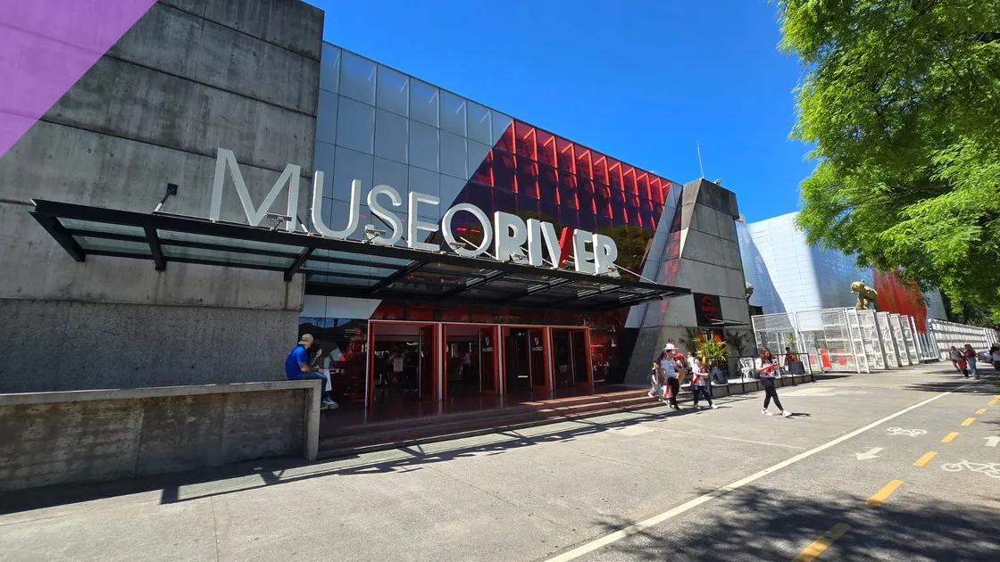
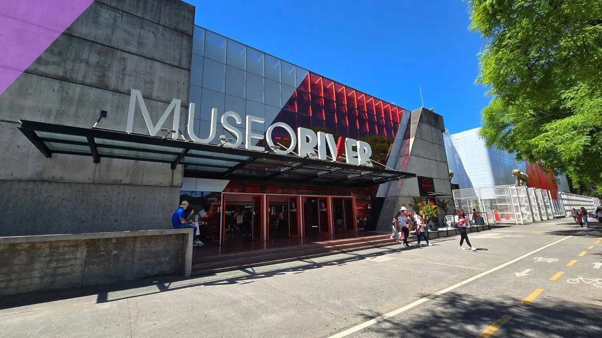

El Estadio Monumental, oficialmente conocido como Estadio Más Monumental, es el hogar del Club Atlético River Plate y el estadio más grande de Argentina, con una capacidad para más de 85,000 espectadores. Ubicado en el barrio de Núñez, en Buenos Aires, este emblemático estadio ha sido testigo de innumerables momentos históricos del fútbol argentino y mundial. Además de albergar partidos de fútbol, el Monumental también es escenario de conciertos, eventos culturales y actividades turísticas.
El Museo River Plate ofrece una experiencia única para los amantes del fútbol y la historia del club. A través de sus exposiciones interactivas, los visitantes pueden recorrer más de 100 años de historia del club, desde sus inicios hasta la actualidad.
A continuación, se presenta un listado de los servicios disponibles tanto en el Museo River Plate como en el Estadio Monumental: